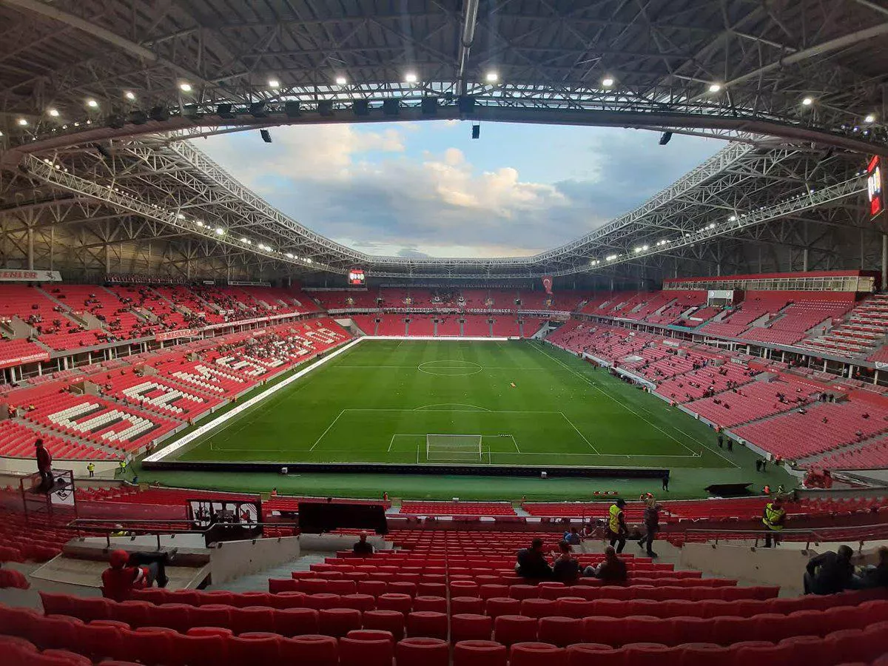
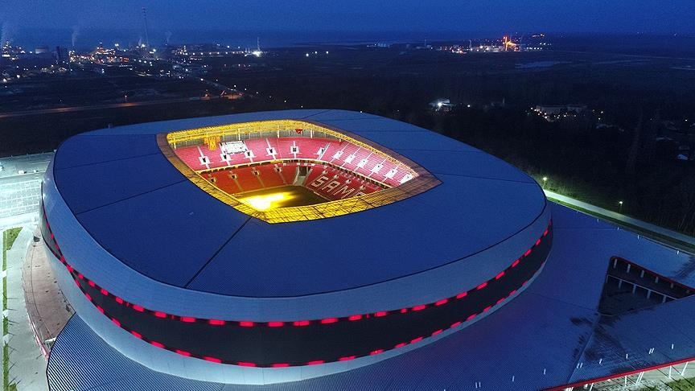
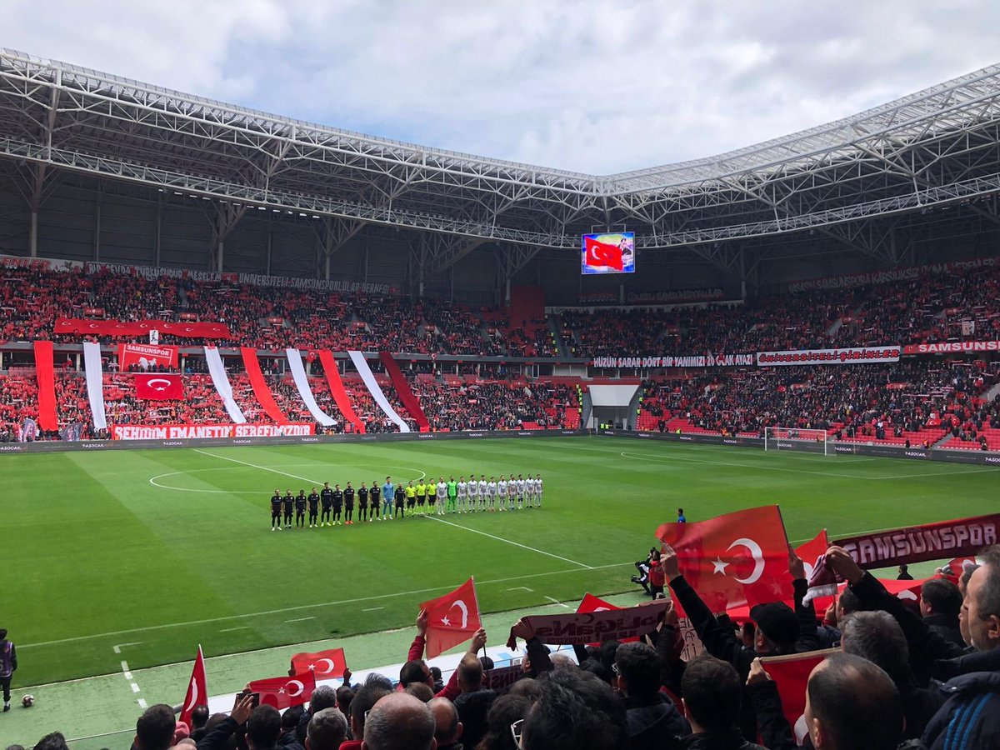
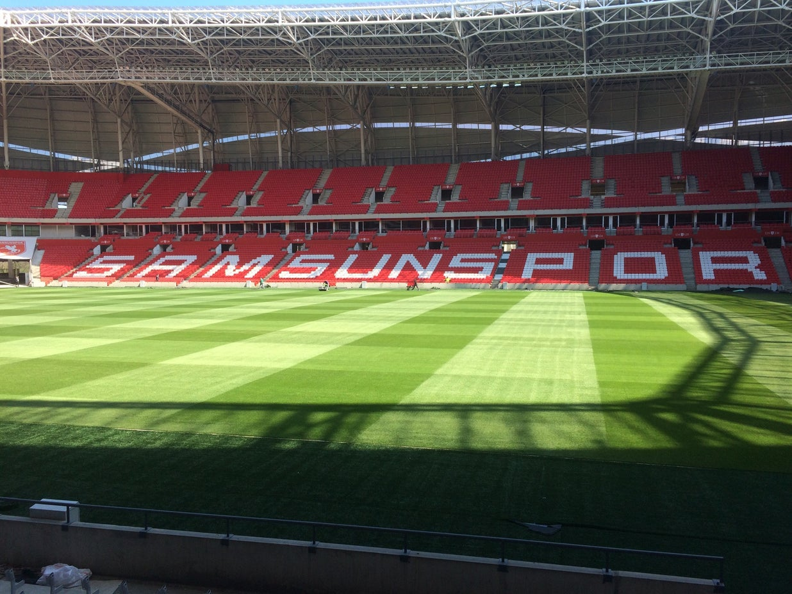

Mirasımız
Mirasımız SAMSUNSPOR
Samsun 19 Mayıs Stadyumu
Samsun 19 Mayıs Stadyumu, Samsun'un Tekkeköy ilçesinde bulunan akıllı çok amaçlı stadyumdur. 33.919 koltuk kapasitesiyle Samsunspor'un iç saha maçlarına ev sahipliği yapmaktadır. Toplu Konut İdaresi tarafından yaptırılan ve 2017'de tamamlanan stadyum adını Mustafa Kemal'in Samsun'a çıktığı gün olan 19 Mayıs'tan almaktadır.
| Açılış Tarihi | 29 Temmuz 2017 |
|---|---|
| Kapasite | 33.919 |
| Oyun Alanı | 68x105 m |
| Işıklandırma | Var |
| Engelli Tribünü | Var |
| Zemin Türü | Hibrit Çim |
| Loca Sayısı | 54 |
İlk olarak Nisan 2011'de duyurulan proje 3 Aralık 2012'de Toplu Konut İdaresince yapılan ve Ali Acar İnşaat'ın kazandığı ihale ile resmiyete dökülmüş, 4 Ağustos 2013 tarihindeki temel atma töreni ile de inşa aşamasına geçilmiştir. İnşaatın başlangıç tarihinden itibaren en geç 2 yıl içerisinde tamamlanması taahhüt edilse de UEFA'nın standartlarına uyum sağlamak için projede yenileme yapılması, çatının inşasıyla sorumlu şirketin iflas etmesi gibi sebeplerle tamamlanma süresi birkaç kez sarkmıştır. Bu bağlamda, ilk etapta 2014-15 sezonunda hazır hâle geleceği açıklanan stadyumun açılışı önce 2015-16, daha sonra 2016-17 sezonu başına ertelense de bu hedefler de yakalanamamıştır. 2017 Temmuz'unda işler hâle getirilebilen stadyumun inşası neredeyse 4 yıl sürmüştür.
Stadyumda gerçekleştirilen ilk etkinlik 18 Temmuz 2017 tarihindeki 2017 Yaz İşitme Engelliler Olimpiyat Oyunlarının açılış töreni olmuş, resmî açılışsa bundan on bir gün sonra Samsunspor ile MKE Ankaragücü arasındaki dostluk karşılaşmasıyla yapılmıştır. İlk resmî maç ise Beşiktaş ile Konyaspor arasındaki 2017 Süper Kupa mücadelesi olmuştur. 137.700 m2 alan üzerinde kurulu olan stadyum kompleksinin 50.000 m2lik kısmı tribünlerle birlikte oyun alanını teşkil ediyor olup geri kalan kısmı otopark, yeşil alan ve alışveriş merkezlerinden oluşmaktadır. ₺145 milyonluk maliyetiyle 1988-2018 yılları arasında Avrupa'da inşa edilen stadyumlar arasındaki "en ekonomik stadyum" olarak kayda geçen yapının konumu ise sanayi kuruluşlarına yakın bir noktada bulunması sebebiyle sporcu sağlığı ekseninde tartışmalara neden olmaktadır.



